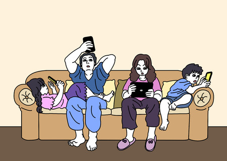

Factors
Personality characteristics
Young people who committed suicide were found to have had poorer problem-solving skills than their peers. Their behavior was characterized by a rather passive attitude, waiting for someone else to solve the problems for them, no matter simple problems or complex interpersonal problems.There is a way of thinking, known as "dichotomy thinking" found in these young people. It means that these young people think in terms of best and worst without accepting the possibilities that lie between these two extremes. .This inability in problem solving and mood regulation often causes insecurity and low self-esteem, but it can also lead to suicidal crisis.
Family factors
Poor Communication within family members
Parental divorce
Communication between family members plays an important role in our life. Direct conflicts with parents have a great impact on young people's feelings and emotions. Furthermore, violence at home often seems to be found in the background history of young suicide cases, not only specifically against the child, but more as a way of dealing with problems between family members.
According to the study found that men from divorced families had more than three times the odds of suicidal ideation in comparison to men whose parents had not divorced. Adult daughters of divorce had 83 per cent higher odds of suicidal ideation than their female peers who had not experienced parental divorce.Parental divorce can affect children socially.Young people tend to have less social contact with others. Sometimes they feel insecure and wonder if their family is the only family that has gotten divorced.

Mental disorders
Most studies agree that suicide is closely linked to mental disorders. Mental disorders are found to contribute between 47 and 74% of suicide risk. Eating disorders, specifically anorexia nervosa, have the highest mortality rate out of all mental health disorders. Studies have shown that individuals with anorexia nervosa have the highest successful suicide rates and greatest number of suicide attempts.They may feel hopeless,have feelings of being emotional trapped and feel as if they are a burden resulting in suicidal thoughts and attempts.

Substance Use(Drugs and Alcohols)
Misusing alcohol or drugs often contributes to suicidal thoughts and behavior. Youth who depends on substances often have a number of other risk factors for suicide. In addition to being depressed, they are likely to have social and financial problems.